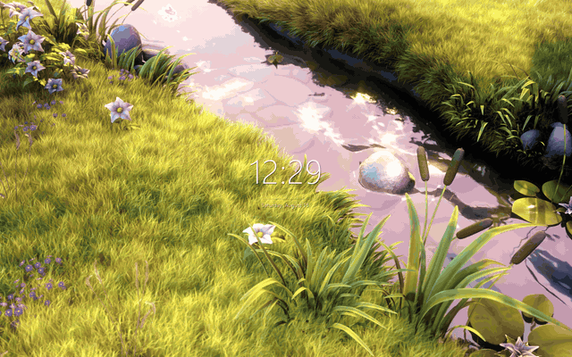
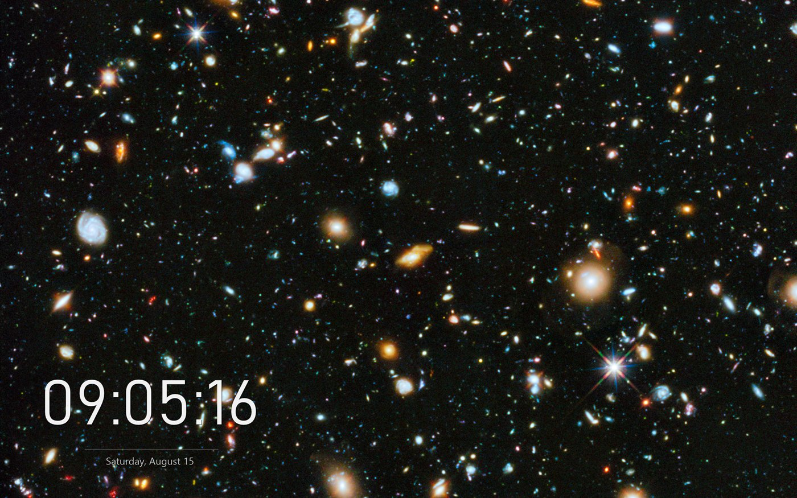
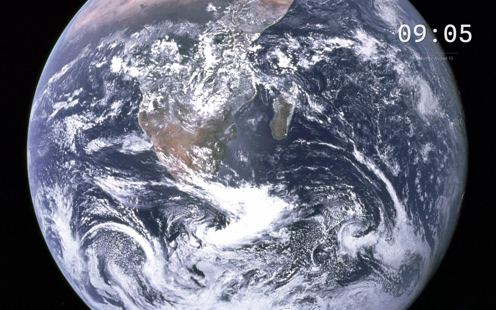
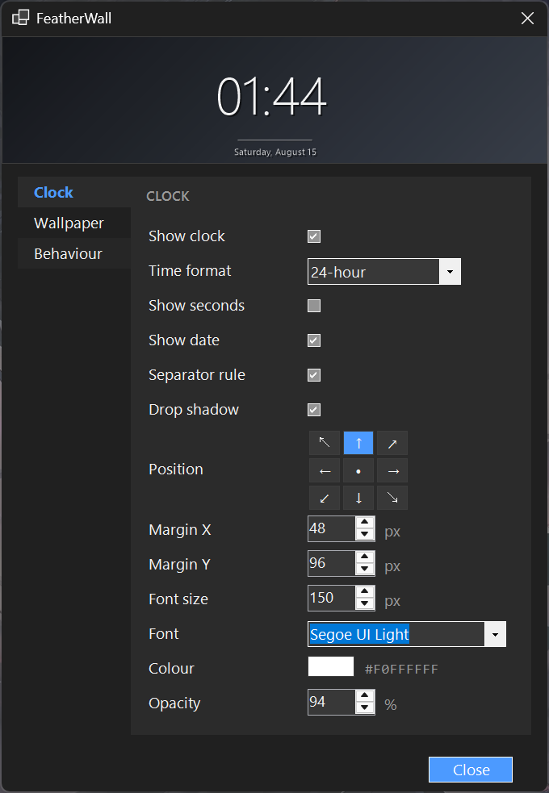

How it works
Three layers, one process
Your wallpaper, an optional clock drawn above it, and your windows on top. FeatherWall composes that stack through DirectComposition, the same path the Windows shell uses, from a single executable with no browser engine and no launcher.

Measured, not estimated
What it costs you
Sampled over 30 to 40 second windows on a running instance. Windows 11 Pro 26200, 24 logical cores, 2560×1600 at 150% scaling.
Bars show memory. Playback stops rather than throttles for fullscreen apps, the lock screen, remote sessions and battery saver, which is why a paused video costs less CPU than a still image redrawing its clock.
The widget
Any font you own, anywhere on screen
Nine positions, any installed typeface, adjustable size, colour and opacity. The settings panel previews it with the same renderer that paints your desktop.



Who made this
I'm Ritvik Dayal, a software engineer. I build tools from scratch to understand how things actually work, which is how this started: I wanted a live wallpaper and did not want a launcher, an account, or a browser engine running behind my desktop.
FeatherWall is a personal open-source project, MIT licensed, with no paid tier and nothing to upsell.
What isn't done
Multi-monitor layouts, the pre-24H2 desktop layout, and recovery after Explorer restarts are written and unit-tested, but have never run on real hardware. One developer, one display.
Releases are unsigned, so SmartScreen will warn you. Verify the archive or build from source.
300f59a28269fc2fc034ad86ee64d6fd320cd17f8c2e7a31c789bcc28844dfd7